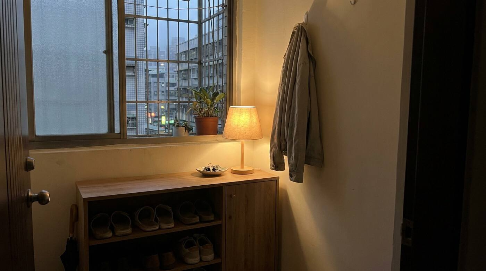

在板橋，名下有房卻被銀行拒貸或缺現金，合法的選擇通常比你想的多。可評估：二胎房貸（產權不移轉）、售後回租（過戶＋簽租約續住＋可依約買回）、貸款整合（多筆高利併一筆銀行貸款）、民間轉銀行。鋮馨租賃位於中和中正路 468 號、服務板橋一帶、在地 20 年；本公司非金融機構、不放貸，最終核貸由金融機構決定。
板橋是新北市政中心與人口最多的行政區，板橋車站三鐵共構（高鐵、台鐵、捷運板南線）並結合客運轉運站，環狀線設板橋、板新站。新板特區商業繁榮，住宅型態多元，從老公寓到新成屋皆有。板橋屋主在增貸、二胎遇到銀行條件卡關時，可評估其他合法管道。鋮馨租賃有限公司總部設於中和區中正路 468 號，在地深耕不動產與資金規劃超過 20 年，協助你把狀況理清楚、找到最有機會的合法方向。是否適合，依個案不動產條件與財務狀況評估。
名下有不動產時，常見的合法管道有四種，各自適合不同情況。能不能辦、條件與額度多少，都要看你的不動產條件、財務狀況與當時市場，最終由金融機構依個案決定。

二胎房貸是在既有第一順位房貸之外、以同一不動產再設定第二順位抵押取得資金，產權不移轉。一般會看不動產的殘餘可貸空間（市值扣掉一胎餘額）、屋況與個人財務狀況；信用瑕疵不必然無法評估，但能不能貸、額度與利率多少，最終由金融機構依個案核定。鋮馨協助板橋屋主把狀況理清楚、比較可行管道，非放貸方。
售後回租是「過戶＋租約＋買回」一組安排：屋主把房子過戶給投資方、同時簽訂租約繼續居住，並保有日後依約買回的權利。流程約為：免費諮詢與不動產評估→提案（金額多落在市值 7–9 成、依個案）→簽約→過戶→資金到位，整體常見約 2–4 週。產權會移轉，簽約前務必看懂買回、租金、租期與違約條款；是否適合依個案評估。
可先把名下所有債務（信貸、卡循、民間借款、房貸）攤開，評估「貸款整合」把多筆高利率債務整併為一筆銀行貸款、降低每月月付；或把高利率民間借款分階段轉回銀行體系。鋮馨提供諮詢與媒合協助，不是放貸方，最終核貸由金融機構決定。
有。板橋緊鄰中和，鋮馨熟悉板橋各區段行情與在地銀行管道。鋮馨租賃有限公司位於新北市中和區中正路 468 號，服務範圍涵蓋板橋一帶，營業時間週一至週五 09:00–18:00，電話 02-2249-0517 / 0931-087-996，亦可加 LINE 諮詢。
本頁資訊僅供參考，實際結果依個案不動產條件、財務狀況與市場情況而定。鋮馨租賃有限公司為融資租賃業者，非金融機構、不放貸，相關貸款或核貸結果最終由金融機構依個案決定。地址：新北市中和區中正路 468 號。